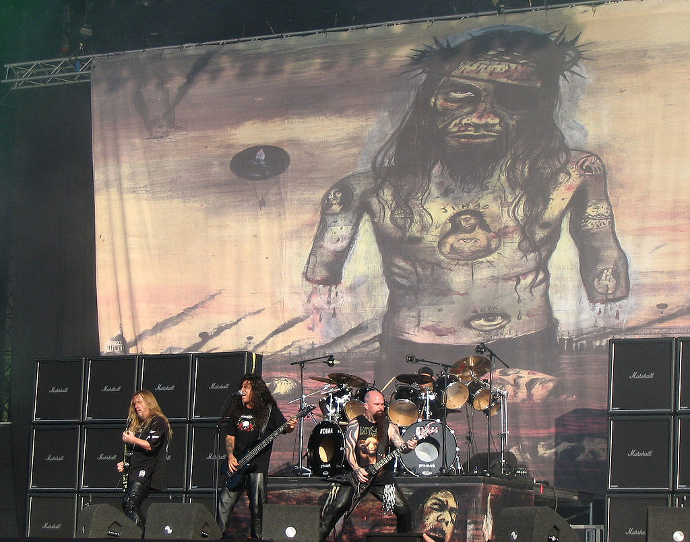
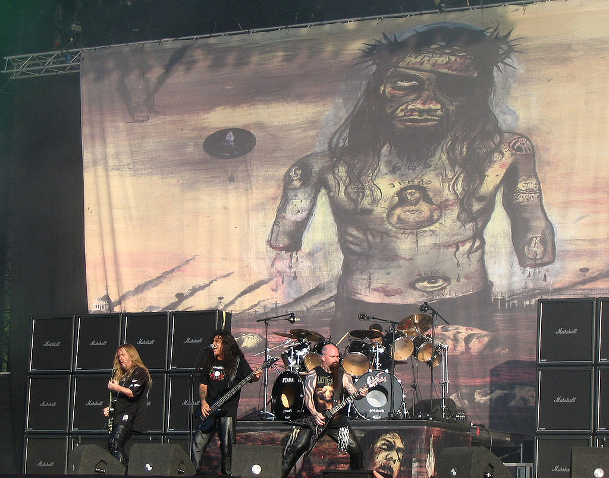

Live 2007



Slayer är ett amerikanskt thrash metal-band, bildat i Huntington Park i Kalifornien, USA 1981 av gitarristerna Jeff Hanneman och Kerry King. Året därpå anslöt sångaren och basisten Tom Araya och trummisen Dave Lombardo. Efter att Jeff Hanneman avled 2013 och Dave Lombardo lämnade bandet samma år består Slayer av originalmedlemmarna Araya och King tillsammans med gitarristen Gary Holt och trummisen Paul Bostaph. Slayer har haft stora framgångar både försäljningsmässigt, sex album har certifierats med guld och ett med platina, och bland kritiker. Bandets fans har ofta benämnts som bland de mest dedikerade inom genren. Bandet anses tillsammans med Metallica, Anthrax och Megadeth tillhöra "The Big Four of Thrash" på grund av sin betydelse för utvecklingen av genren thrash metal. Slayers tredje studioalbum, Reign in Blood (1986), anses av musikkritiker vara en höjdpunkt inom thrash metal. Skivan spelade också en viktig roll när det gäller vidareutvecklingen av andra mer extrema metalformer. Den 22 januari 2018 meddelade Slayer att de skulle genomföra en sista världsturné under 2018-2019 och därefter avsluta bandets verksamhet efter 38 år. Sommarens turnédatum äger rum i USA och Kanada medan Europa turneras i november-december 2018.

Slayers musik betecknas i allmänhet som trash metal. Ibland har även beteckningen speed metal förekommit som i Washington Post i december 1986 när Joe Brown recenserade bandets spelning på Warner Theatre och av Jon Pareles 1988 i The New York Times, där han även benämnde de övriga "Big Four"-bandens musik som speed metal. Hannemans och Kings gitarrsolon har beskrivits som "vilt kaotiska" ("wildly chaotic") och "skruvat genialiska" ("twisted genius"). Lombardos höghastighet och aggression i trumspelet gav honom epitetet "godfather of double bass" i Drummerworld. Det var i huvudsak gitarristerna Jeff Hanneman och Kerry King som skrev musiken i bandet, med vissa bidrag av Lombardo. Tillsammans med Tom Araya stod Hanneman och King också för lyriken, ibland tillsammans och ibland var och en för sig.[97] Enligt en intervju med Hanneman 2004 var det alltid öppet för vem som helst av medlemmarna att skapa musik och sedan behöll man det som var bra nog och förkastade annat. Medlemmarna hade olika influenser i sitt textskapande. Hanneman inspirerades av frågor kring religion, nazism, krigföring och liknande områden. Kings lyrik var oftast anti-religiös medan Araya i texterna skrev bland annat om seriemördare och om krig.